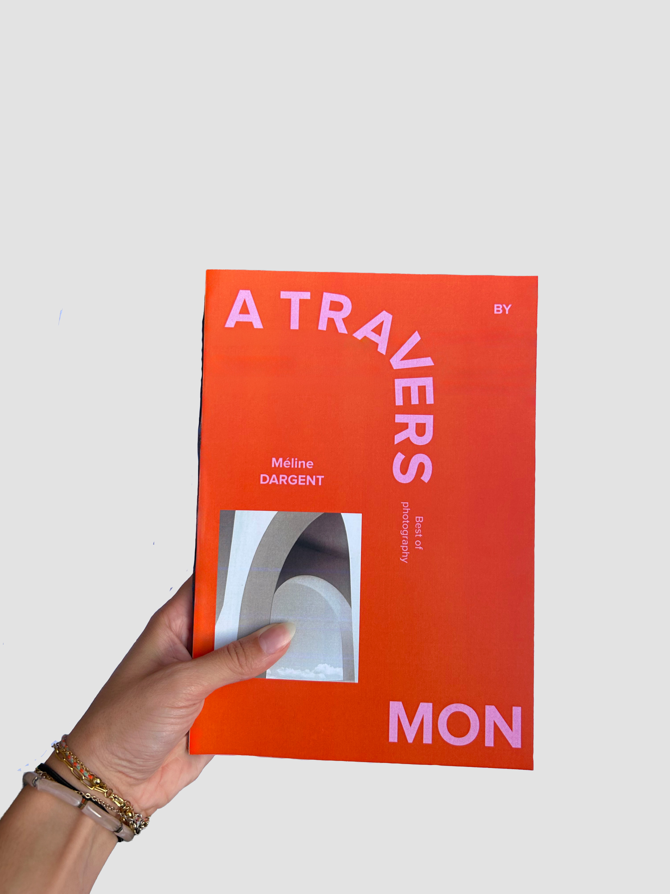
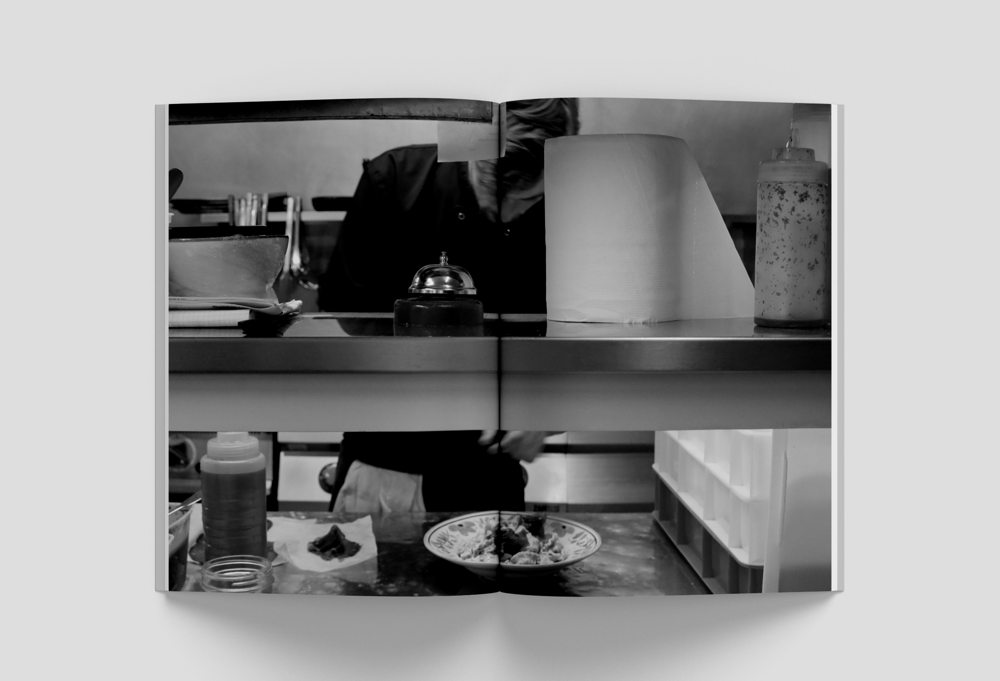
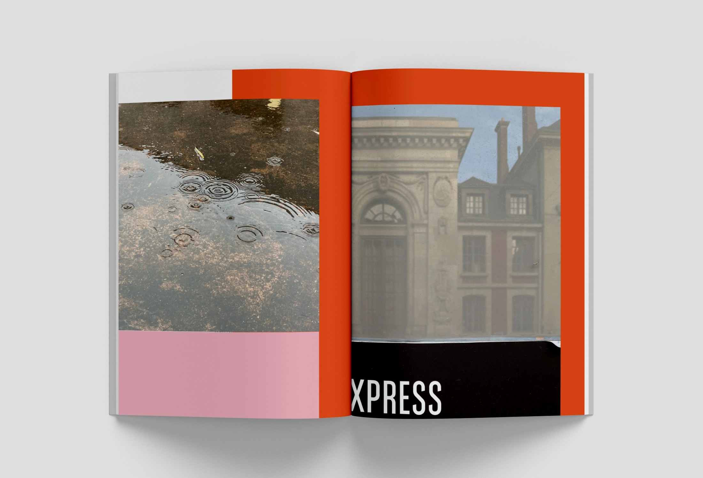
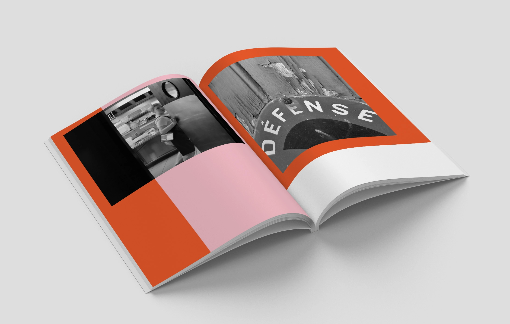

À travers mon globe oculaire
Édition photographique





Le projet À travers mon globe oculaire reprend mes meilleures photographies prises entre 2024 et 2026. Elles proviennent de projets scolaires, d’une collaboration avec un restaurant pour photographier ses cuisines, ou encore de photos personnelles.